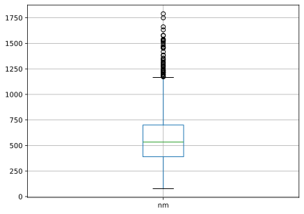

import numpy as np
import pandas as pd9 Pandas
pandas is a framework that is best suited to work with tabular or heterogeneous data, in the contrast of numpy that best works with homogeneous data (all having the same type).
Similar to numpy it is used in many other libraries to do the data wrangling in the background like scikit-learn.
Before we get started a small excursion on how to structure data.
9.1 Tidy Data
A lot of algorithms and functions require the same tidy data structure as input so there should be a common definition.
It is common to start a section about tidy data with two quotes:
Happy families are all alike; every unhappy family is unhappy in its own way - Leo Tolstoy
Like families, tidy datasets are all alike but every messy dataset is messy in its own way. Tidy datasets provide a standardized way to link the structure of a dataset (its physical layout) with its semantics (its meaning). - Hadley Wickham
Note
If you follow the tidy data principle you basically have a Codd’s 3 normal form database.
The basic rules are:
- every variable has its own column
- every observation/stamp/… has its own row
- every single values has its own cell
| Robot_ID | Timestamp | Sensor_Type | Sensor_Value | Unit | |
|---|---|---|---|---|---|
| 1 | 2023-09-27 08:00:00 | Temperature | 25.3 | °C | |
| 1 | 2023-09-27 08:00:15 | Temperature | 25.5 | °C | |
| 1 | 2023-09-27 08:00:30 | Humidity | 45.2 | % | |
| 2 | 2023-09-27 08:00:00 | Temperature | 24.8 | °C | |
| 2 | 2023-09-27 08:00:15 | Temperature | 24.9 | °C | |
| 2 | 2023-09-27 08:00:30 | Humidity | 46.0 | % | |
| 3 | 2023-09-27 08:00:00 | Temperature | 25.0 | °C | |
| 3 | 2023-09-27 08:00:15 | Temperature | 25.1 | °C | |
| 3 | 2023-09-27 08:00:30 | Humidity | 45.8 | % |
As usual you can stretch these rules a bit to save storage to
| Robot_ID | Timestamp | Temperature_C | Humidity_% |
|---|---|---|---|
| 1 | 2023-09-27 08:00:00 | 25.3 | 45.2 |
| 1 | 2023-09-27 08:00:15 | 25.5 | 45.1 |
| 2 | 2023-09-27 08:00:00 | 24.8 | 46.0 |
| 2 | 2023-09-27 08:00:15 | 24.9 | 46.2 |
| 3 | 2023-09-27 08:00:00 | 25.0 | 45.8 |
| 3 | 2023-09-27 08:00:15 | 25.1 | 45.9 |
The advantage her is that you have only one line per timestamp but you loose flexibility. Most of the time you will have multiple processes providing different streams and you have a raw vault for these streams and you process them into a format you rely on to work with further.
Now that we know how we can structure data we can go on and start with pandas.
9.2 Basic structure
Tip
Similar to the convention to call numpy by the short handle np, pandas is usually referenced by pd
So we will use
The two main data structures in pandas are
pd.Seriesfor one-dimensional labelled array holding dta of any type,pd.DataFramefor a two-dimensional data structure that holds data like a two-dimensional array of a table with rows and columns.
1s = pd.Series([4, 7, np.nan, -5, 3])
2print(s)
3print(s.array)
4print(s.index)
5s2 = pd.Series([4, 7, np.nan, -5, 3], index=["c", "a", "b", "d", "e"])
6print(f"{s[0] == s2["c"]=}")
print(f"{s2[["c", "b"]]=}")
7es = np.exp(s)
print(f"{es}")- 1
-
data creation is similar to
numpysndarray - 2
- the output is different as it has an index and an array
- 3
- we can also access them independently
- 4
- the index is by default an integer starting from 0
- 5
- the index can be specified
- 6
- you can access via a list of indices or a single index
- 7
- you can compute on the series
0 4.0
1 7.0
2 NaN
3 -5.0
4 3.0
dtype: float64
<NumpyExtensionArray>
[ np.float64(4.0), np.float64(7.0), np.float64(nan), np.float64(-5.0),
np.float64(3.0)]
Length: 5, dtype: float64
RangeIndex(start=0, stop=5, step=1)
s[0] == s2["c"]=np.True_
s2[["c", "b"]]=c 4.0
b NaN
dtype: float64
0 54.598150
1 1096.633158
2 NaN
3 0.006738
4 20.085537
dtype: float64We can take this to a more extensive example and start of with the second data type the DataFrame.
Note
pandas provides a nice interface that also shows data as tables and it interacts perfectly with iPythonNotebooks or Quarto.
So the tables you see are generated directly from Python, in order to have a better viewing experience we therefore split up the code more extensively as usual.
area_dict = {"Vienna": 415, "Lower Austria": 19178,
"Styria": 16401, "Upper Austria": 11982,
"Tyrol": 12648, "Carinthia": 9536,
"Salzburg": 7154,"Vorarlberg": 2601,
"Burgenland": 3965}
pop_dict = {"Vienna": 1794770, "Lower Austria": 1636287,
"Styria": 1221014, "Upper Austria": 1436791,
"Tyrol": 728537, "Carinthia": 557371,
"Salzburg": 538258,"Vorarlberg": 378490,
"Burgenland": 288229}
area = pd.Series(area_dict)
pop = pd.Series(pop_dict)
states = pd.DataFrame({"area": area, "population": pop})
states| area | population | |
|---|---|---|
| Vienna | 415 | 1794770 |
| Lower Austria | 19178 | 1636287 |
| Styria | 16401 | 1221014 |
| Upper Austria | 11982 | 1436791 |
| Tyrol | 12648 | 728537 |
| Carinthia | 9536 | 557371 |
| Salzburg | 7154 | 538258 |
| Vorarlberg | 2601 | 378490 |
| Burgenland | 3965 | 288229 |
We can access transfer it back into a Series by accessing it accordingly.
- 1
- Select by position
- 2
-
Select by label will both return a
Seriesand you can look at a detailed description of the entireDataFramefor each column with
Vienna 1794770
Lower Austria 1636287
Name: population, dtype: int64states.describe()| area | population | |
|---|---|---|
| count | 9.000000 | 9.000000e+00 |
| mean | 9320.000000 | 9.533052e+05 |
| std | 6357.483543 | 5.736115e+05 |
| min | 415.000000 | 2.882290e+05 |
| 25% | 3965.000000 | 5.382580e+05 |
| 50% | 9536.000000 | 7.285370e+05 |
| 75% | 12648.000000 | 1.436791e+06 |
| max | 19178.000000 | 1.794770e+06 |
that already provides common properties we have seen in the Data sets section of the sister lecture. Of course we can also add new columns, if they have the same index
states["density"] = states["population"]/states["area"]
states.sort_values(by=["density"])| area | population | density | |
|---|---|---|---|
| Tyrol | 12648 | 728537 | 57.600965 |
| Carinthia | 9536 | 557371 | 58.449140 |
| Burgenland | 3965 | 288229 | 72.693317 |
| Styria | 16401 | 1221014 | 74.447534 |
| Salzburg | 7154 | 538258 | 75.238748 |
| Lower Austria | 19178 | 1636287 | 85.321045 |
| Upper Austria | 11982 | 1436791 | 119.912452 |
| Vorarlberg | 2601 | 378490 | 145.517109 |
| Vienna | 415 | 1794770 | 4324.746988 |
Let us use the Munich renting dataset for further investigations, as it is significantly bigger.
We can directly load it into a DataFrame and view its head or tail
1df = pd.read_csv("https://data.ub.uni-muenchen.de/2/1/miete03.asc", sep="\t")
df.head() # no output
df.tail()- 1
- Load a csv like file.
| nm | nmqm | wfl | rooms | bj | bez | wohngut | wohnbest | ww0 | zh0 | badkach0 | badextra | kueche | |
|---|---|---|---|---|---|---|---|---|---|---|---|---|---|
| 2048 | 802.99 | 8.54 | 94 | 4 | 1992.0 | 19 | 1 | 0 | 0 | 0 | 0 | 0 | 0 |
| 2049 | 271.16 | 7.75 | 35 | 1 | 1966.0 | 19 | 0 | 0 | 0 | 0 | 0 | 0 | 0 |
| 2050 | 567.54 | 8.11 | 70 | 3 | 1973.0 | 16 | 0 | 0 | 0 | 0 | 0 | 0 | 0 |
| 2051 | 323.42 | 9.24 | 35 | 1 | 1970.0 | 21 | 0 | 0 | 0 | 0 | 0 | 0 | 0 |
| 2052 | 506.19 | 7.79 | 65 | 3 | 1966.0 | 7 | 0 | 0 | 0 | 0 | 1 | 0 | 0 |
Of course we can transfer it into a numpy array.
df.to_numpy()array([[741.39, 10.9 , 68. , ..., 0. , 0. , 0. ],
[715.82, 11.01, 65. , ..., 0. , 0. , 0. ],
[528.25, 8.38, 63. , ..., 0. , 0. , 0. ],
...,
[567.54, 8.11, 70. , ..., 0. , 0. , 0. ],
[323.42, 9.24, 35. , ..., 0. , 0. , 0. ],
[506.19, 7.79, 65. , ..., 1. , 0. , 0. ]])But this has the potential downside to cast everything to one type even as we have here clearly integers and floats mixed.
df.dtypesnm float64
nmqm float64
wfl int64
rooms int64
bj float64
bez int64
wohngut int64
wohnbest int64
ww0 int64
zh0 int64
badkach0 int64
badextra int64
kueche int64
dtype: objectAs we can see the bj is a float64 while it should be a int64 we can fix this by calling
df = df.astype({"bj": "int64"})
df.dtypesnm float64
nmqm float64
wfl int64
rooms int64
bj int64
bez int64
wohngut int64
wohnbest int64
ww0 int64
zh0 int64
badkach0 int64
badextra int64
kueche int64
dtype: objectdf = df.astype({"bj": "int64"})
df.dtypesnm float64
nmqm float64
wfl int64
rooms int64
bj int64
bez int64
wohngut int64
wohnbest int64
ww0 int64
zh0 int64
badkach0 int64
badextra int64
kueche int64
dtype: objectWe can also transpose a DataFrame in the same style as we do in numpy
df.T| 0 | 1 | 2 | 3 | 4 | 5 | 6 | 7 | 8 | 9 | ... | 2043 | 2044 | 2045 | 2046 | 2047 | 2048 | 2049 | 2050 | 2051 | 2052 | |
|---|---|---|---|---|---|---|---|---|---|---|---|---|---|---|---|---|---|---|---|---|---|
| nm | 741.39 | 715.82 | 528.25 | 553.99 | 698.21 | 935.65 | 204.85 | 426.93 | 446.33 | 381.45 | ... | 988.00 | 397.98 | 470.39 | 505.99 | 260.15 | 802.99 | 271.16 | 567.54 | 323.42 | 506.19 |
| nmqm | 10.90 | 11.01 | 8.38 | 8.52 | 6.98 | 11.55 | 3.72 | 5.40 | 8.58 | 4.95 | ... | 11.36 | 4.28 | 9.80 | 10.12 | 5.00 | 8.54 | 7.75 | 8.11 | 9.24 | 7.79 |
| wfl | 68.00 | 65.00 | 63.00 | 65.00 | 100.00 | 81.00 | 55.00 | 79.00 | 52.00 | 77.00 | ... | 87.00 | 93.00 | 48.00 | 50.00 | 52.00 | 94.00 | 35.00 | 70.00 | 35.00 | 65.00 |
| rooms | 2.00 | 2.00 | 3.00 | 3.00 | 4.00 | 4.00 | 2.00 | 3.00 | 1.00 | 3.00 | ... | 3.00 | 4.00 | 2.00 | 2.00 | 2.00 | 4.00 | 1.00 | 3.00 | 1.00 | 3.00 |
| bj | 1918.00 | 1995.00 | 1918.00 | 1983.00 | 1995.00 | 1980.00 | 1924.00 | 1924.00 | 1957.00 | 1948.00 | ... | 1992.00 | 1957.00 | 1983.00 | 1987.00 | 1948.00 | 1992.00 | 1966.00 | 1973.00 | 1970.00 | 1966.00 |
| bez | 2.00 | 2.00 | 2.00 | 16.00 | 16.00 | 16.00 | 6.00 | 6.00 | 6.00 | 6.00 | ... | 17.00 | 17.00 | 16.00 | 16.00 | 16.00 | 19.00 | 19.00 | 16.00 | 21.00 | 7.00 |
| wohngut | 1.00 | 1.00 | 1.00 | 0.00 | 1.00 | 0.00 | 0.00 | 0.00 | 0.00 | 0.00 | ... | 1.00 | 0.00 | 0.00 | 0.00 | 0.00 | 1.00 | 0.00 | 0.00 | 0.00 | 0.00 |
| wohnbest | 0.00 | 0.00 | 0.00 | 0.00 | 0.00 | 0.00 | 0.00 | 0.00 | 0.00 | 0.00 | ... | 0.00 | 0.00 | 0.00 | 0.00 | 0.00 | 0.00 | 0.00 | 0.00 | 0.00 | 0.00 |
| ww0 | 0.00 | 0.00 | 0.00 | 0.00 | 0.00 | 0.00 | 0.00 | 0.00 | 0.00 | 0.00 | ... | 0.00 | 0.00 | 0.00 | 0.00 | 0.00 | 0.00 | 0.00 | 0.00 | 0.00 | 0.00 |
| zh0 | 0.00 | 0.00 | 0.00 | 0.00 | 0.00 | 0.00 | 0.00 | 0.00 | 0.00 | 0.00 | ... | 0.00 | 0.00 | 0.00 | 0.00 | 0.00 | 0.00 | 0.00 | 0.00 | 0.00 | 0.00 |
| badkach0 | 0.00 | 0.00 | 0.00 | 0.00 | 0.00 | 0.00 | 0.00 | 0.00 | 0.00 | 0.00 | ... | 0.00 | 1.00 | 0.00 | 0.00 | 0.00 | 0.00 | 0.00 | 0.00 | 0.00 | 1.00 |
| badextra | 0.00 | 0.00 | 0.00 | 1.00 | 1.00 | 0.00 | 1.00 | 0.00 | 0.00 | 0.00 | ... | 0.00 | 1.00 | 0.00 | 0.00 | 0.00 | 0.00 | 0.00 | 0.00 | 0.00 | 0.00 |
| kueche | 0.00 | 0.00 | 0.00 | 0.00 | 1.00 | 0.00 | 0.00 | 0.00 | 0.00 | 0.00 | ... | 0.00 | 0.00 | 0.00 | 1.00 | 0.00 | 0.00 | 0.00 | 0.00 | 0.00 | 0.00 |
13 rows × 2053 columns
but note that this might mess up your data types
df.T.dtypes0 float64
1 float64
2 float64
3 float64
4 float64
...
2048 float64
2049 float64
2050 float64
2051 float64
2052 float64
Length: 2053, dtype: objectWe can also use boolean indexing to filter by certain conditions
# Filter for no central heating and no warm water
filter = (df["ww0"] == 1) & (df["zh0"] == 1)
df[filter]| nm | nmqm | wfl | rooms | bj | bez | wohngut | wohnbest | ww0 | zh0 | badkach0 | badextra | kueche | |
|---|---|---|---|---|---|---|---|---|---|---|---|---|---|
| 17 | 796.07 | 4.47 | 178 | 6 | 1918 | 1 | 1 | 0 | 1 | 1 | 0 | 0 | 0 |
| 24 | 390.00 | 4.24 | 92 | 3 | 1918 | 4 | 1 | 0 | 1 | 1 | 0 | 0 | 0 |
| 40 | 360.48 | 5.81 | 62 | 3 | 1918 | 9 | 1 | 0 | 1 | 1 | 0 | 0 | 0 |
| 78 | 269.84 | 4.35 | 62 | 2 | 1918 | 2 | 0 | 0 | 1 | 1 | 0 | 0 | 0 |
| 92 | 132.24 | 3.57 | 37 | 2 | 1948 | 11 | 0 | 0 | 1 | 1 | 0 | 0 | 0 |
| ... | ... | ... | ... | ... | ... | ... | ... | ... | ... | ... | ... | ... | ... |
| 1854 | 183.09 | 3.98 | 46 | 2 | 1918 | 25 | 0 | 0 | 1 | 1 | 0 | 0 | 0 |
| 1881 | 281.21 | 5.31 | 53 | 2 | 1918 | 3 | 1 | 0 | 1 | 1 | 0 | 0 | 0 |
| 1913 | 362.00 | 6.14 | 59 | 2 | 1957 | 3 | 1 | 0 | 1 | 1 | 1 | 0 | 0 |
| 1954 | 409.42 | 5.12 | 80 | 3 | 1918 | 5 | 0 | 0 | 1 | 1 | 1 | 0 | 0 |
| 2015 | 420.26 | 6.78 | 62 | 2 | 1918 | 2 | 1 | 0 | 1 | 1 | 1 | 0 | 0 |
61 rows × 13 columns
We can also use several functions to deal with missing data:
df.dropna(how="any")deletes all rows that contain aNaNanywheredf.fillna(value=1)fills all occurringNaNwith a value (in this case1)pd.isna(df)will return a boolean mask for allNaNentries.
With user defined functions we can apply properties along specific axis
df.agg(["sum", "min", "mean"], axis=0)| nm | nmqm | wfl | rooms | bj | bez | wohngut | wohnbest | ww0 | zh0 | badkach0 | badextra | kueche | |
|---|---|---|---|---|---|---|---|---|---|---|---|---|---|
| sum | 1.170401e+06 | 17232.680000 | 142879.000000 | 5333.000000 | 4.019690e+06 | 23133.000000 | 803.000000 | 45.000000 | 72.000000 | 175.000000 | 380.000000 | 191.000000 | 150.000000 |
| min | 7.731000e+01 | 1.470000 | 17.000000 | 1.000000 | 1.918000e+03 | 1.000000 | 0.000000 | 0.000000 | 0.000000 | 0.000000 | 0.000000 | 0.000000 | 0.000000 |
| mean | 5.700930e+02 | 8.393902 | 69.595226 | 2.597662 | 1.957959e+03 | 11.267901 | 0.391135 | 0.021919 | 0.035071 | 0.085241 | 0.185095 | 0.093035 | 0.073064 |
and transform, i.e. manipulate data
1df.groupby("bj")["bj"].transform(lambda x: x - 1900)- 1
-
groupbywill split the data into groups based on the criteria ofDate.
0 18
1 95
2 18
3 83
4 95
..
2048 92
2049 66
2050 73
2051 70
2052 66
Name: bj, Length: 2053, dtype: int64Quite often it is useful to find out how often a value appears, this can be done by
df["ww0"].value_counts()ww0
0 1981
1 72
Name: count, dtype: int64Of course we can combine or merge Series and DataFrame objects.
The handling is similar as with databases where there are different ways to _ join_ data. First we concat row-wise
sections = [df[:3], df[3:7], df[1000:1001]]
pd.concat(sections)| nm | nmqm | wfl | rooms | bj | bez | wohngut | wohnbest | ww0 | zh0 | badkach0 | badextra | kueche | |
|---|---|---|---|---|---|---|---|---|---|---|---|---|---|
| 0 | 741.39 | 10.90 | 68 | 2 | 1918 | 2 | 1 | 0 | 0 | 0 | 0 | 0 | 0 |
| 1 | 715.82 | 11.01 | 65 | 2 | 1995 | 2 | 1 | 0 | 0 | 0 | 0 | 0 | 0 |
| 2 | 528.25 | 8.38 | 63 | 3 | 1918 | 2 | 1 | 0 | 0 | 0 | 0 | 0 | 0 |
| 3 | 553.99 | 8.52 | 65 | 3 | 1983 | 16 | 0 | 0 | 0 | 0 | 0 | 1 | 0 |
| 4 | 698.21 | 6.98 | 100 | 4 | 1995 | 16 | 1 | 0 | 0 | 0 | 0 | 1 | 1 |
| 5 | 935.65 | 11.55 | 81 | 4 | 1980 | 16 | 0 | 0 | 0 | 0 | 0 | 0 | 0 |
| 6 | 204.85 | 3.72 | 55 | 2 | 1924 | 6 | 0 | 0 | 0 | 0 | 0 | 1 | 0 |
| 1000 | 640.99 | 8.66 | 74 | 3 | 1998 | 14 | 0 | 0 | 0 | 0 | 0 | 0 | 0 |
To illustrate a simple join we define some new DataFrames
left = pd.DataFrame({"key": ["foo", "foo"], "lval": [1, 2]})
right = pd.DataFrame({"key": ["foo", "foo"], "rval": [4, 5]})
pd.merge(left, right, on="key")| key | lval | rval | |
|---|---|---|---|
| 0 | foo | 1 | 4 |
| 1 | foo | 1 | 5 |
| 2 | foo | 2 | 4 |
| 3 | foo | 2 | 5 |
The entire list on how this can be performed in a SQL like fashion can be found here.
Before we finish up our excursion into pandas we also want to show the plotting possibilities.
%config InlineBackend.figure_formats = ['svg']
df.boxplot(column=["nm"])
We can also compute the correlation between two series
df["nm"].corr(df["wfl"])np.float64(0.7074626685750687)or the entire DataFrame
df.corr()| nm | nmqm | wfl | rooms | bj | bez | wohngut | wohnbest | ww0 | zh0 | badkach0 | badextra | kueche | |
|---|---|---|---|---|---|---|---|---|---|---|---|---|---|
| nm | 1.000000 | 0.474797 | 0.707463 | 0.544247 | 0.046899 | -0.066760 | 0.160568 | 0.147495 | -0.158632 | -0.190115 | -0.132485 | 0.294068 | 0.232006 |
| nmqm | 0.474797 | 1.000000 | -0.226830 | -0.272906 | 0.286289 | -0.074426 | 0.150382 | 0.110457 | -0.282217 | -0.298151 | -0.172683 | 0.064557 | 0.188240 |
| wfl | 0.707463 | -0.226830 | 1.000000 | 0.840645 | -0.199098 | -0.052163 | 0.091258 | 0.062842 | 0.070852 | 0.022593 | -0.025485 | 0.276846 | 0.086211 |
| rooms | 0.544247 | -0.272906 | 0.840645 | 1.000000 | -0.152770 | 0.029349 | 0.002112 | 0.027458 | 0.083504 | 0.029149 | 0.001135 | 0.211483 | 0.048320 |
| bj | 0.046899 | 0.286289 | -0.199098 | -0.152770 | 1.000000 | 0.311889 | -0.109691 | 0.060595 | -0.215680 | -0.321621 | -0.102482 | 0.042413 | 0.146066 |
| bez | -0.066760 | -0.074426 | -0.052163 | 0.029349 | 0.311889 | 1.000000 | -0.310562 | 0.061914 | -0.069356 | -0.127157 | -0.039538 | 0.057875 | 0.076300 |
| wohngut | 0.160568 | 0.150382 | 0.091258 | 0.002112 | -0.109691 | -0.310562 | 1.000000 | -0.119985 | 0.037104 | 0.016269 | -0.011902 | 0.062858 | 0.051125 |
| wohnbest | 0.147495 | 0.110457 | 0.062842 | 0.027458 | 0.060595 | 0.061914 | -0.119985 | 1.000000 | -0.028540 | -0.045698 | -0.028517 | 0.043673 | 0.060236 |
| ww0 | -0.158632 | -0.282217 | 0.070852 | 0.083504 | -0.215680 | -0.069356 | 0.037104 | -0.028540 | 1.000000 | 0.520224 | 0.079585 | -0.033713 | -0.053524 |
| zh0 | -0.190115 | -0.298151 | 0.022593 | 0.029149 | -0.321621 | -0.127157 | 0.016269 | -0.045698 | 0.520224 | 1.000000 | 0.146457 | -0.049728 | -0.072298 |
| badkach0 | -0.132485 | -0.172683 | -0.025485 | 0.001135 | -0.102482 | -0.039538 | -0.011902 | -0.028517 | 0.079585 | 0.146457 | 1.000000 | -0.036066 | -0.051876 |
| badextra | 0.294068 | 0.064557 | 0.276846 | 0.211483 | 0.042413 | 0.057875 | 0.062858 | 0.043673 | -0.033713 | -0.049728 | -0.036066 | 1.000000 | 0.109827 |
| kueche | 0.232006 | 0.188240 | 0.086211 | 0.048320 | 0.146066 | 0.076300 | 0.051125 | 0.060236 | -0.053524 | -0.072298 | -0.051876 | 0.109827 | 1.000000 |
There are a lot of additional features contained in pandas that we will learn by using it. Nevertheless let us recall some further references:
- 10 minutes to pandas
- McKinney (2022) (direct link to the Pandas section)
- 7 unique pandas functions to elevate your analysis